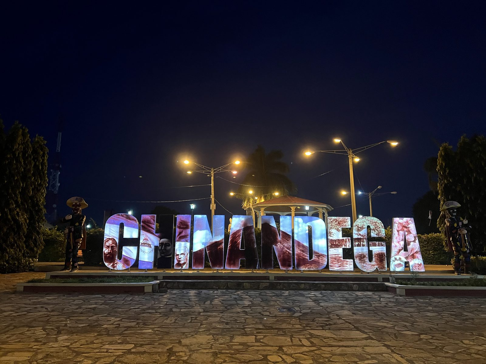
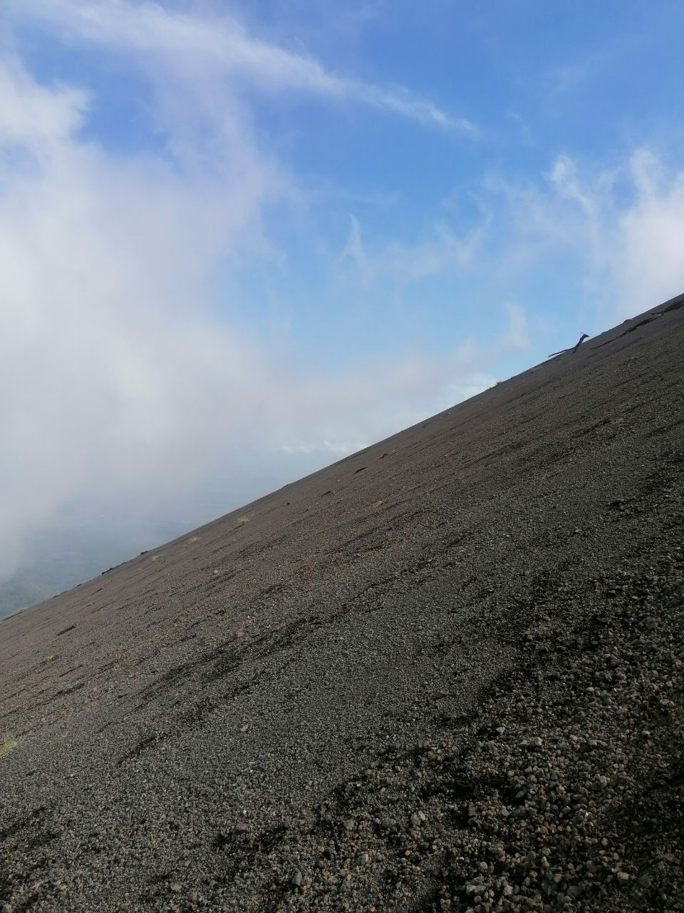
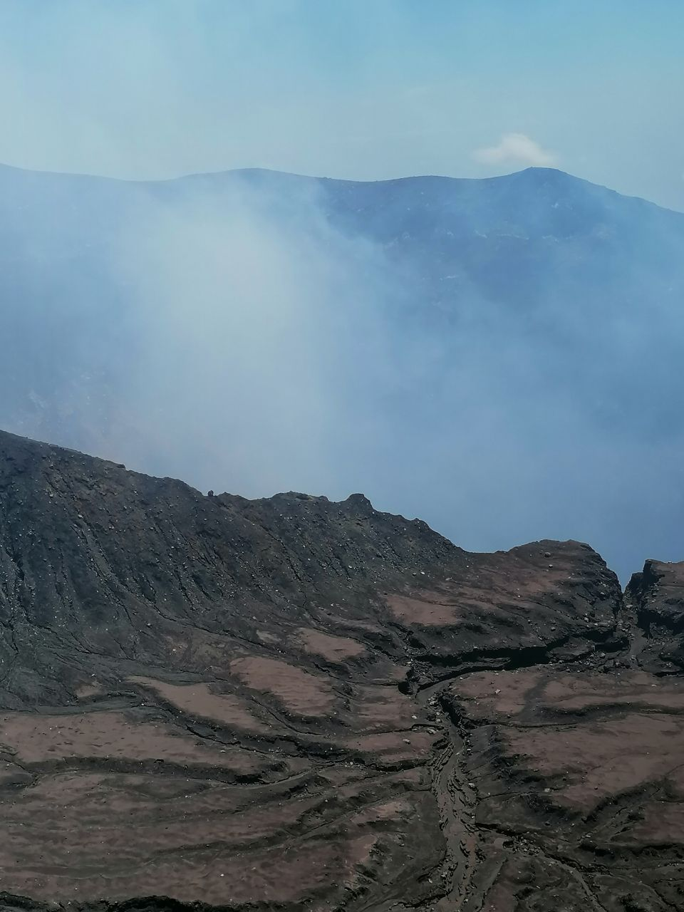
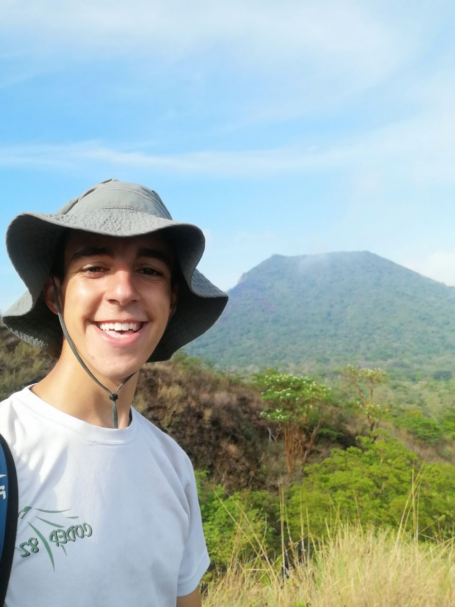

Étape 1 · Ascension
Chinandega et …
Après ce voyage haut en couleurs, nous voilà enfin à Chinandega. Peu de touristes s'y arrête, mais un beau volcan est proche : le San Cristobal ! En arrivant au terminal de bus, on découvre immédiatement la spécialité du Nicaragua, les vélos taxi ! On s'est pris un air bnb confort, peut être le logement le plus confort de tout le séjour. Cam a besoin de recharger les batteries, de passer une journée au calme et avec la clim.
Après avoir visité le centre ville assez petit mais animé, avec un immense marché, nous allons au resto puis repos. Moi je prépare l'ascension du landemain, car c'est un volcan qui se mérite !

… l'Ascension du San Cristobal
Tout dans ce volcan est pas si simple : plutôt difficile d'accès, encore plus d'en rentrer, ascension très costaud, peu touristique, hostile. Mais la gentillesse des locaux est incroyable, comme souvent. Je détaille plus amplement l'ascension dans la page dédiée parce qu'il y a pas mal d'infos a donner. Mais l'info principale : l'ascension c'est 2,5km pour 1000m de dénivelé, dans de la cendre fine. Si vous le tentez, bon courage ! Moi j'ai adoré, je vous en dit plus si vous cliquez sur le bouton !!
J'ai peu de photo car il me reste seulement celles que j'avais mis sur Polarstep. Plus d'informations en Etape 5 de ce voyage...




Pour en savoir plus sur le volcans, l'accès, l'ascension et les spécificités techniques, cliquez là !!